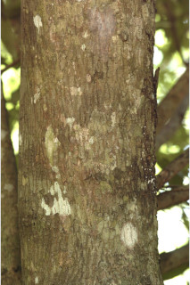
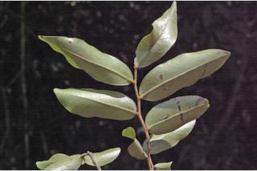

Images :




| Habit : | Shrubs , 2-4 m tall, much branched. |
| Leaves : | Leaves simple , alternate , distichous ; petioles 0.1- 0.2 cm long, tomentose ; lamina 4.5-9 x 2.4-2.8 cm, ovate-oblong to elliptic-oblong , apex obtusely acuminate , base rounded , pubescent on both surfaces when young; secondary_nerves 10-12 pairs, slender; tertiary_nerves reticulate . |
| Inflorescence / Flower : | Flowers solitary , axillary , greenish pink. |
| Fruit and Seed : | Clustered 1-seeded berries , obliquely ellipsoid or oblong , short-stalked or sessile , apiculate , pubescent . |